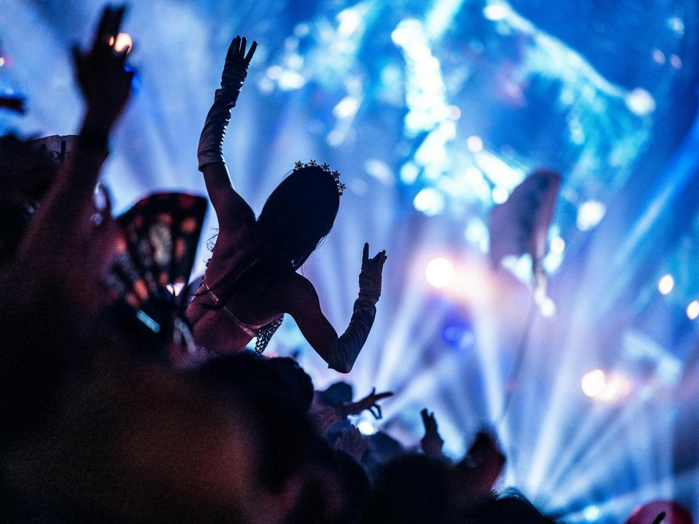

Escenarios de otro mundo
Cada año, un escenario principal completamente nuevo — diseñado como una pieza de arquitectura efímera que solo existe durante esa edición.
El hogar original del festival. Desde 2005, el dominio recreativo de De Schorre se transforma cada verano en el escenario de un cuento que millones de personas siguen desde todo el mundo.
Todo comenzó en De Schorre, un parque junto al río en Boom, a pocos minutos de Amberes. Lo que empezó como un festival de un fin de semana se convirtió en una de las citas más esperadas de la música electrónica, con dos fines de semana idénticos para que más gente pueda vivirlo.
Cada edición transforma por completo el paisaje: un escenario principal nuevo, una historia distinta que se cuenta a través de la escenografía, la iluminación y los propios artistas — sin repetir nunca el mismo diseño dos años seguidos.

Cada año, un escenario principal completamente nuevo — diseñado como una pieza de arquitectura efímera que solo existe durante esa edición.
El camping oficial junto al festival, pensado para que la magia continúe también fuera de los escenarios, las 24 horas del día.
Personas de todos los rincones del planeta comparten el mismo terreno, el mismo idioma universal: la música.

Miles de personas convergen en De Schorre para vivir la apertura de puertas.

Cada edición se despide dejando una página nueva en la historia del festival.

El escenario principal se reinventa por completo edición tras edición.

Cada rincón del festival esconde un detalle pensado para sorprender.